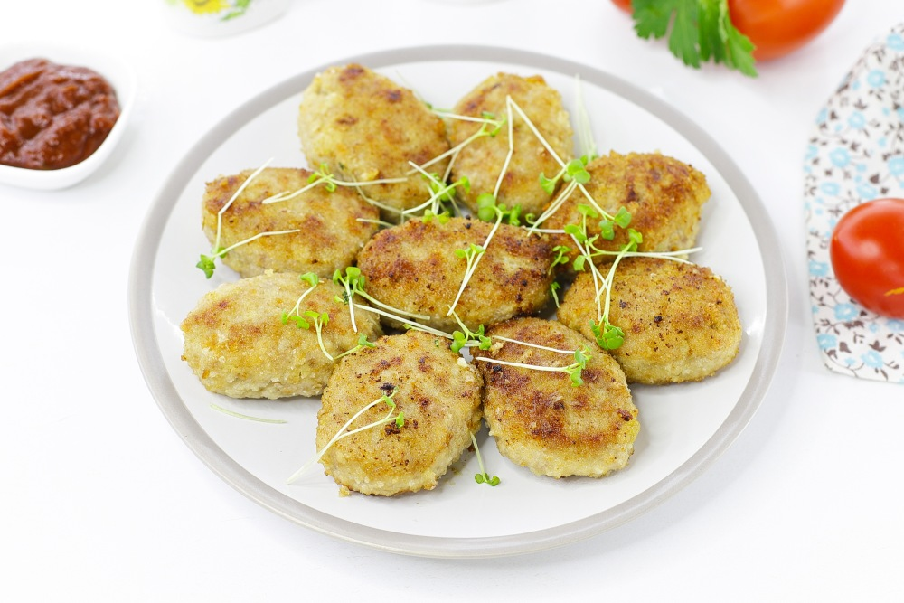

Рецепт сочных котлет из свинины
Раскрою маленький секрет, проверенный на практике, как я готовлю сочные котлеты из свинины.
Они получаются невероятно нежными, с румяной корочкой снаружи и мягким, сочным мясом внутри.
В рецепте я использую простые, но важные ингредиенты, которые добавляют сочности готовому блюду.
Такие добавки, как кориандр и чеснок, делают котлеты очень ароматными.
| Время готовки |
Количество порций |
Калорийность |
Сложность готовки |
Рейтинг |
| 1 час |
15 |
227 ккал |
Новичок |
0 отзывов |

Как все таки приготовить сочные котлеты из свинины?
Ингридиенты:
| Свинина |
Сало |
Лук репчатый |
Чеснок |
Хлеб |
Кориандр |
Соль |
Перец черный |
Масло растительное |
Вода |
| 1кг |
100г |
250г |
15г |
150г белый |
3г молотый |
по вкусу |
по вкусу молотый |
по вкусу для жарки |
250мл |
Количество порций - 15